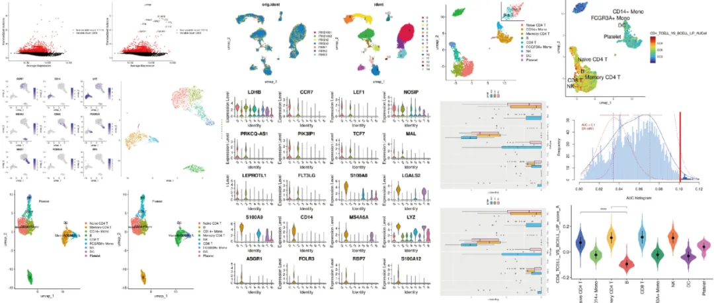
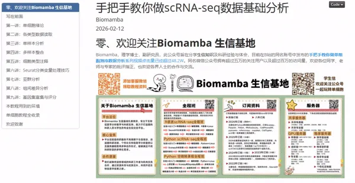

明日直播，《scRNA-seq基础分析》
原文：https://mp.weixin.qq.com/s?__biz=MzAwMzIzOTk5OQ==&mid=2247537219&idx=2&sn=63087f3b8a295f05d9190ccb4fae82a0&chksm=9b3c2b13ac4ba2053aaa8d634967b711e6056acc6b40ed90a380e6f9899a09d547b4ec141834#rd 合集：生信基地
明天09:00进行scRNA-seq数据基础分析专题教学，详细介绍与课程大纲可见：视频介绍，学单细胞你应该按照这个节奏，还没有报名的同学，可联系客服微信[Biomamba_zhushou]报名参加课程哦~
单细胞基础分析教学内容


同我们以前的课程一样，我们给大家准备了学习手册和学习资料，大家可联系客服微信[Biomamba_zhushou]领取：
教程图片集锦：

**
**
单细胞基础分析学习手册

单细胞基础分析教程目录 ：一、写在前面二、单细胞绪论2.1 课程安排2.2 视频及测试文件2.3 学习版服务器使用教程三、各类型数据读取3.1 简介3.2 视频及测试文件3.3 环境准备3.4 代码四、单样本分析4.1 R包安装与加载4.2 数据读入并创建Seurat对象4.3 质控数据及可视化
4.4 细胞分群4.5 分群后的可视化五、多样本整合5.1 单纯的merge5.2 anchor(CCA)5.3 harmony 速度快、内存少六、细胞类型注释6.1 准备工作6.2 方法一:查数据库6.3 方法二：通过singleR进行注释6.4 方法三:自定义singleR的注释6.5 Seurat内置的TransferData七 、亚群分析
7.1 测试数据
7.2 Seurat::FindSubCluster(）
7.3 取子集重新聚类分群
八、组间差异分析
8.1 读入并检查数据
8.2 差异分析
8.3 解放生产力 通过循环自动计算差异基因
8.4 可视化方法
8.5 提取表达量，用ggplot2 DIY一个箱线图
九、基因集富集与评分
9.1 富集分析
9.2 基因集评分
十、本教程用到的环境十一、单细胞教程全收录十二、欢迎致谢 测试文件，总大小5.44GB
测试文件，总大小5.44GB
 还想要了解更多单细胞/空转课程：共计251小时视频教程，保姆级单细胞&空转教学，都欢迎找我们聊聊~
还想要了解更多单细胞/空转课程：共计251小时视频教程，保姆级单细胞&空转教学，都欢迎找我们聊聊~
如何联系我们

 留一个领取资料、开箱即用的单细胞分析镜像的微信号[Biomamba_zhushou]，方便各位随时交流。同时我们也构建了交流群矩阵，欢迎大家入群讨论。
大家可以阅读完这几篇之后添加给生信入门初学者的小贴士
没有检索，就没有发言权
留一个领取资料、开箱即用的单细胞分析镜像的微信号[Biomamba_zhushou]，方便各位随时交流。同时我们也构建了交流群矩阵，欢迎大家入群讨论。
大家可以阅读完这几篇之后添加给生信入门初学者的小贴士
没有检索，就没有发言权
已有生信基地联系方式的同学无需重复添加
** **
 您点的每个赞和在看，我都认真当成了喜欢
您点的每个赞和在看，我都认真当成了喜欢